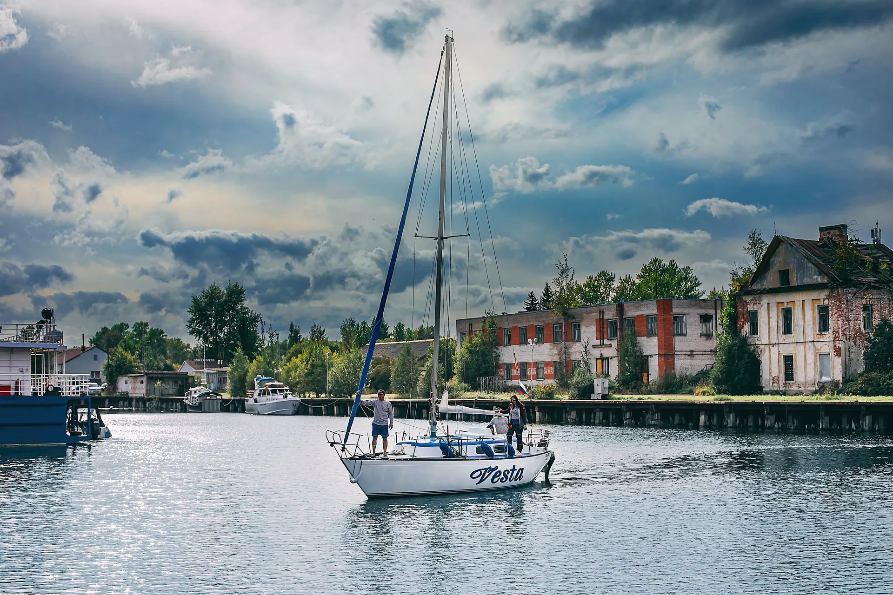

Nazaliv / Project case
Nazaliv — нейминг, бренд и запуск

Я полностью вёл проект Nazaliv по заказу клиента: разработал нейминг и придумал бренд, создал логотип, разработал веб-сайт, подготовил контент и презентацию, а также обеспечил запуск лидогенерации.
Зона ответственности
Брендинг · Веб-разработка · Контент · Презентация · Lead Generation